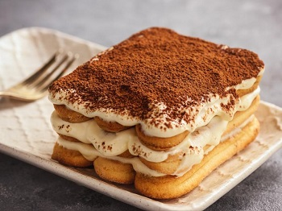

Spróbuj sprawdzonego przepisu na najlepsze tiramisu. Deser z biszkoptami, kremem ze śmietanki i serka mascarpone wykończone dobrej jakości kakao jest świetnym dodatkiem do kawy czy herbaty.
Zaparz mocną kawę, przelej ją do prostokątnego naczynia, w którym zmieści się biszkopt i pozostaw ją do wystudzenia.
Sparz jajka a następnie oddziel żółtka od jajek.
Żółtka przełóż do szklanej miski i dodaj cukier puder.
Miskę postaw na delikatnie wrzącej wodzie w garnku (ważne aby woda nie dotykała miski). Żółtka ubijaj na jasną i puszystą masę przez około 2-3 minuty.
Do żółtek dodawaj partiami serek mascarpone i dokładnie połącz.
Ubij białka na puszystą pianę i dodawaj partiami do żółtek z mascarpone.
Biszkopty szybko zamocz w kawie i ułóż w formie do pieczenia lub innym naczyniu.
Na warstwę biszkoptów wylej 1/3 masy. Połóż na nią biszkopty, zalej masą, ułóż biszkopty i zalej ostatnią porcją masy.
Wierzch dokładnie pokryj kakao.
Tiramisu pozostaw w lodówce na minimum 4 godziny.